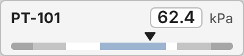

<figure class="card" id="Templates_AnalogIndicator_C_CompactRow"><div class="view" style="width:240px;height:55px"><div class="stage" style="width:200px;height:46px;transform:scale(1.2000)"><div class="hit" style="position:absolute;inset:0;pointer-events:none" title="click: open dynamic window"></div></div></div><figcaption><code>Templates/AnalogIndicator/C_CompactRow</code><br><b class="ok">T_KPI</b> &middot; dynamic window <code>dw_ProcessValue</code><br>click symbol: open dynamic window<br><i>render with planned fix 7 (alignItems: stretch); as committed the zone bars collapse</i></figcaption></figure>